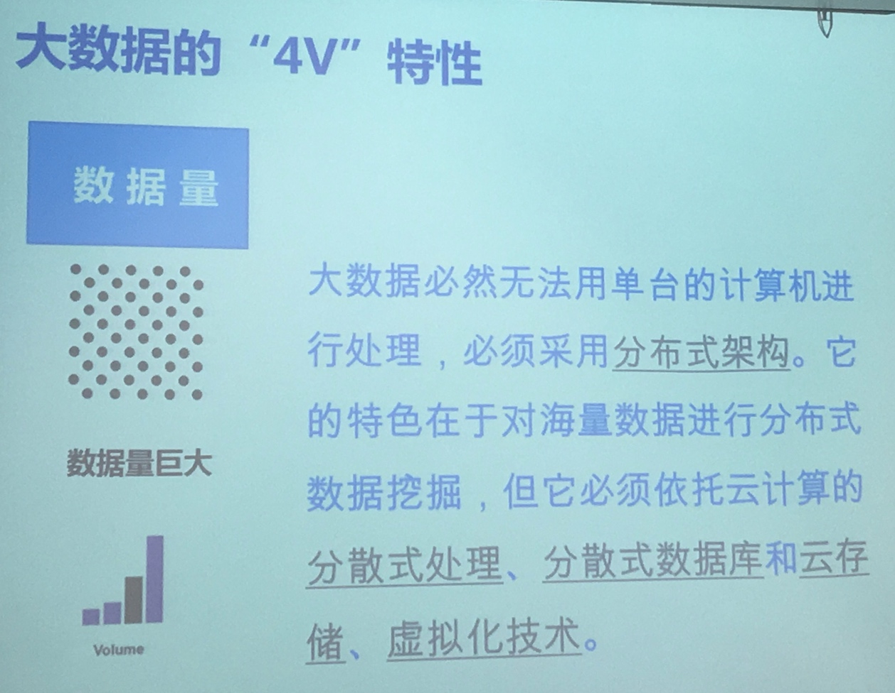
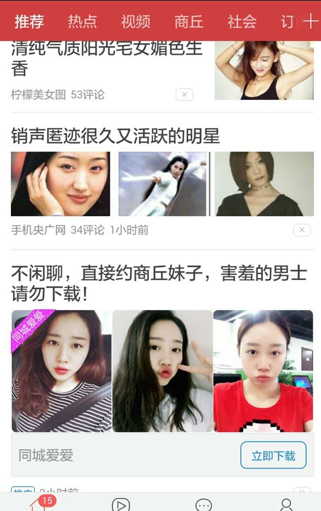
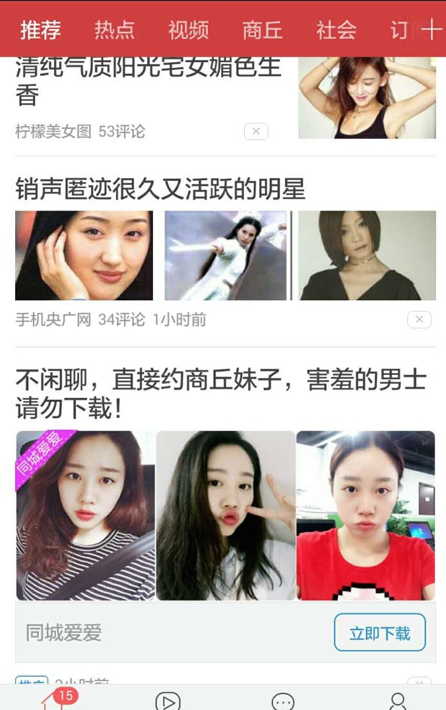

【IMC】跨平台传播 课堂笔记
数字广告新时代 消费者和营销传播的变革
广告的定义
- 广告是为了某种特定的需要，通过一定形式的媒体（报纸、杂志、电视、广播、户外广告牌、直邮、网站、博客、短信），公开而广泛地向公众传递信息的宣传手段。
- 目的在于告知、鼓励或者说服目标受众改变其认知或行为。
- 商业广告，是指以盈利为目的广告，通常是商品生产者、经营者和消费者之间沟通信息的重要手段，企业占领市场、推销产品、提供劳务的重要形式，主要目的是扩大经济效益。

营销传播时代的转变
- 1G: 大众时代
- 2G: 整合时代
- 3G: 对话时代
『大众』式营销的本质
本质是购买消费者时间
- 『我说你听』
- 点对面传播
- 信息单一
- 单向传播
- 集中在电视、户外和印刷媒体
- 『购买』消费者时间
整合时代

- 仍然是『我说你听』
- 多渠道传播
- 信息较丰富
- 品牌与销售并重
- 单向+双向传播
- 考虑媒体与传播目的的配合
- 一半艺术，一半『科学（ROI优化）』
- 考虑依靠信息内容吸引消费者注意力
基于数字媒体的对话式营销
- 品牌营销成为一种对话
- 依靠『内容』，而不是￥，去换取注意
- 依靠『社区』力量
- 真实、及时
- 消费者也创造信息
- 单向+双向传播并重
- 电视、户外和印刷不一定是主要媒体
网络营销趋势


脑补 大数据



A 内容、社交、搜索
- 51%以上的网站的流量来源为自然流量
- 有机搜索是网站流量的驱动，内容是保持流量的燃油。
- 社交媒体为品牌的扩张和影响力提供了巨大的潜力，但只有当品牌的内容被认为是值得分享的社会媒体营销才可能成功。
- 内容、社交、搜索都必须功能努力，才能成功的帮助品牌实现它的目标。
B 精准投放/程序化购买
从购买资源变成购买目标用户
| 过去 | DSP |
|---|---|
| 购买媒体的特定广告位 | 以『受众购买』为核心 |
| 下单流程复杂，效率不高 | 程序化购买，方便快捷 |
| 在非目标受众身上浪费广告费 | 与广告主需求直接匹配，高效到达 |
巨头精准产品

C 原生性广告
信息流广告
- 『融入信息流，成为被阅读的一部分』，针对越来越恶劣的广告环境做出的改变。
- 信息流广告具有符合用户需要的特点，试图将广告变成内容
- 信息流广告对阅读环境和内容的模拟，给程序化购买带来了机会，尽可能降低用户对广告的识别，使用后以阅读内容的心理去看广告。这种情况下，广告即是内容。
 

D 物联网
物联网三要素：
1. 侦测设备
2. 网络互连
3. 分析工具
营销漏斗

数字营销漏斗除了宏观衡量整体的数字营销绩效外，
另一个价值是按媒体漏斗衡量媒体端到端的绩效。
可以比较聚焦的解决问题。
营销漏斗
- 一种由上到下，视觉化表现从需求、认知、考虑、购买到满意的每个营销阶段
- 每个阶段的宽度代表处于该阶段目标人群的数量，它基于人的决策过程，所以上宽下窄。
- 每个阶段的转化率取决于该阶段人群的准确性（质量）及活动事件的拉动力。
- 由进到出，没有一定的时间性，时间取决于目标人群内在需求或受外在刺激后，心疼或行为的改变。
- 营销漏斗思考分析同城可以帮我们找到有问题的阶段，有量化工具辅助更加。
- 是控制过程并验收成果的营销思考工具。
转化率的极限最好与同行做比较。
集客营销的数字漏斗
- 数字营销漏斗的意义在于建立以见结果导向的、可衡量、可视化、可考核的整合数字营销体系。
- 企业数字营销漏斗模型的建立，是一个由粗放到精细持续完善的过程，应根据营销和运营团队的人力、经验、时间投入以及营销活动的多样性和频繁性来逐步完善。